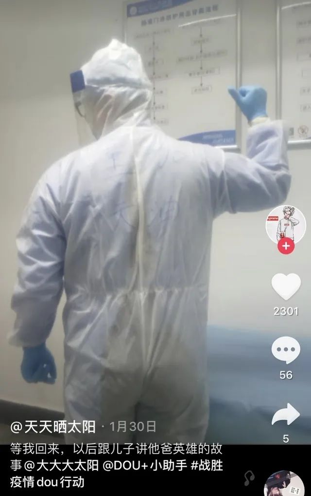

武汉6例门诊新增确诊何来？有人菜场值过班，有人复工被查出
原文链接 备份链接 “湖北和武汉医疗救治、社区防控和后续工作任务依然艰巨繁重，其他地区人员流动和聚集增加带来疫情反弹风险依然存在。”唯有继续加大防控和排查力度，才有可能避免新冠肺炎疫情再次局部暴发 3月18日，武汉协和医院心外科候诊区，医 …

近日，湖北省枝江市人民医院发布讣告，该院麻醉科医生董天因在抗击新冠肺炎疫情前线突发脑血管意外，经全力抢救无效，于3月21日9时16分在宜昌市中心人民医院逝世，享年29岁。
昨天（3月23日），该院麻醉科主任董传斌告诉南都记者，董天1月26日主动申请去抗疫一线支援，2月27日从发热门诊支援结束后到隔离酒店进行隔离。2月29日，董天突发脑血管疾病入住宜昌市中心人民医院治疗，3月3日病情加重，进入ICU加护病房。枝江市人民医院宣传部门工作人员向南都记者表示，董天在抗疫一线工作21天，院方对所有医护人员均保障了正常休息的时间。

据该院3月21日发布的讣告，董天1990年3月出生于湖北省当阳市，2014年7月毕业于皖南医学院，9月进入枝江市人民医院麻醉科工作，2017年12月加入中国共产党。
在董传斌眼中，董天是一个非常优秀的麻醉医生，虽然年纪很轻，但对待工作非常认真，也很能干，是一个很阳光的大男孩。

疫情暴发后，发热门诊成为医院抗疫战争的第一道哨卡。枝江市人民医院2月13日的一篇文章显示，从临床各科室抽调了经验丰富的医护人员，扩充发热门诊。文章介绍了疫情期间发热门诊的工作，“最初，每个诊室每天平均需要接诊100多位患者，这意味着不仅八九个小时不能喝水吃饭上厕所，还要精神高度集中，做好患者的登记、筛查及诊治工作。”
董传斌说，董天成为第一批支援发热门诊的麻醉科医生，“他没有向我们说过担忧或者辛苦，反而让同事和家人放心，他说自己没问题，他每天都是用很积极的态度去工作。”
枝江市人民医院2月24日发布的文章也提到董天，“这个春节，他与身在疾控中心的妻子，共同奋战在抗疫前线”。
董天曾在自己的短视频账号上分享工作经历。2018年11月，他发布了一条视频称“所有的经历都是一种成长”。他说自己是“一名普普通通的麻醉医生”，曾为百岁老人做手术，夜班急诊手术是家常便饭，通宵手术救人时累到奔溃，曾在手术无影灯下迎来新生命，安抚并鼓励病人让他们加油。
1月30日，董天又发布了一段视频。他戴着口罩、医用防护面罩，穿着白色防护服，防护服背面写着“董天加油”四个大字。他为这条视频配文“等我回来，以后跟儿子讲他爸英雄的故事”。
“董天同志在工作中一贯积极肯干、工作踏实、服从安排；他尊重领导，关心集体和同事对人和善，乐于助人，在抗疫一线为全院职工做出了表率，践行了共产党员的初心和使命。”该院在讣告中对董天的病逝表示沉痛哀悼，向其家属表示深切慰问。
**南方都市报（nddaily）报道
**
南都记者 张雅婷
* 南方都市报（nddaily）原创内容未经授权，不得转载。
▊ 南都君特选（戳下方标题）

70多岁母亲去世，50岁阿姨哭着喊出院 | 汕尾为湖北搏命的8个瞬间
广东赴鄂医护搏命瞬间
原文链接 备份链接 “湖北和武汉医疗救治、社区防控和后续工作任务依然艰巨繁重，其他地区人员流动和聚集增加带来疫情反弹风险依然存在。”唯有继续加大防控和排查力度，才有可能避免新冠肺炎疫情再次局部暴发 3月18日，武汉协和医院心外科候诊区，医 …
原文链接 备份链接 . 一名儿科医生的特殊“抗疫”征程 小儿内分泌林医生 02-21 22:25 投诉 阅读数：40万+ . 作为一名儿科医生，能投入到这场没有硝烟的战争中，我深表荣幸 从2020年1月开始，我就被调至位于沌口开发区 …
原文链接 备份链接 凤凰新闻客户端 凤凰网在人间工作室出品 打开凤凰新闻客户端，搜索「在人间」并关注 我是深圳市第三人民医院肝病科的一名医生。春运期间，成千上万的武汉人涌入深圳。随着武汉疫情爆发，深圳也成了新冠病毒的“重灾区”。 1月22 …
原文链接 备份链接 图片来源：视觉中国 记者：赵孟 “ 作为一名专业医生，又是感染者，王广发说，希望自己的观察和思考，能为疫情防控工作提供有益的借鉴。 ” 事后回忆，王广发一直觉得自己感染新冠肺炎“很奇怪”。 2020年1月8日，王广发作 …
原文链接 备份链接 医院呼吁，并不危急的其他疾病患者，可以通过线上咨询、问诊，暂缓前往医院；但该看的病还是要去医院看，千万不要耽误治疗。 记者 | 周 洁 新冠肺炎疫情期间，其他疾病的病人怎么看病？记者连线上海各大医院发现，恢复门诊近一个 …